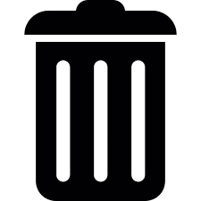

Features
preventDefaultPrevents all default behaviour of a clicked element. For example stops the default behaviour when clicking on a link. This feature is usefull to test click goals: remove the currently tracked goals by clicking on the remove goals button, then activate prevent default. Now you can easily see when a goal will fire by clicking on the element without having to worry about default page actions. Set all experiments to control
Sets the variants for all active experiments to control and reloads the page.
Experiments
Here you can change the currently displayed variation of an experiment and see other information about an experiment. Press this button to see the experiment JavaScript code of the current variation.
Press this button to see the experiment JavaScript code of the current variation.
 Press this button to see the experiment CSS code of the current variation.
Press this button to see the experiment CSS code of the current variation.
 Press this button to see the experiment goals.
Press this button to see the experiment goals.
Goals
Here you can see the fired goals for the experiments that are currently active. You can click on a fired goal to get see extra information about a goal.

Remove all fired goals for the active experiments.